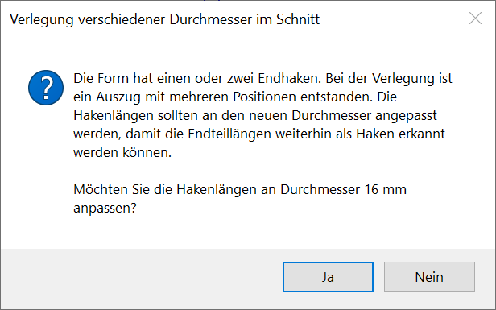
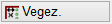
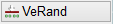
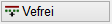
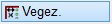
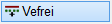

")
Wenn AutFol (untere Menüleiste) eingestellt ist, werden die Verlegungen in Folie 4 abgelegt.
Verlegen von unterschiedlichen Durchmesser einer Auszugsform im Schnitt. ISBCAD führt Sie automatisch durch die benötigten Arbeitsschritte, beginnend mit der Auswahl einer Biegeform [WähFor].
·Die folgende Meldung erscheint nach dem Bestätigen des Verlegefaktors, wenn eine neue Position mit einem größeren, noch nicht verlegten Durchmesser erzeugt wird:
 |
Sie haben die Möglichkeit, die Hakenlängen der Auszugsform an den neuen Durchmesser anzupassen. Um die Hakenlängen anzupassen, wählen Sie Ja. Wenn die aktuellen Hakenlängen nicht angepasst werden sollen, wählen Sie Nein.
Siehe: Hakenlängen an den Stabdurchmesser anpassen
1.Biegeform für die Verlegung wählen [WähFor]
[Welche Form?]
§Klicken Sie die gewünschte Biegeform, einen Auszug oder eine Verlegung dieser Biegeform an oder geben Sie eine in der Zeichnung vorhandene Positionsnummer ein und bestätigen Sie mit der Eingabetaste.
ISBCAD wechselt automatisch zur Angabe des Verlegemusters [868 ø/ø/ø].
2.Verlegemuster für Durchmesser eingeben [868 ø/ø/ø]
§Geben Sie unter Verlege-Muster die Durchmesser in der gewünschten Reihenfolge an. Die einzelnen Durchmesser müssen durch Leerzeichen getrennt sein.
Beispiel: 20 10 20 10 20 10
|
Tipp: |
|
Bei sich wiederholenden Durchmessern: Geben Sie den Wiederholfaktor mit vorangestelltem "w" an. |

3.Verlegung definieren
§Wählen Sie die Verlegemethode über die Schaltflächen im Funktionsbereich.
 |
Gezielte Verlegung durch Angabe der X- und Y-Koordinaten des Anfangs- und Endpunktes. |
 |
Verlegung am Rand. |
 |
Freie Verlegung. |

 Der Verlegebereich wird über die X- und Y-Koordinate des Anfangs- und Endpunktes beschrieben. Liegt der Anfangs- oder Endpunkt der Staffel an einer schrägen Linie, ist es ratsam, das Arbeitskoordinatensystem zu drehen. Alternativ können Sie auch die Hilfsfunktion S [Schnitt] verwenden, um den Anfangs- und/oder Endpunkt an den Schnittpunkt zweier Linien zu setzen. Tippen Sie in das Eingabefeld ein S ein und klicken Sie anschließend die Bezugslinie an. Mit Rechtsklick können Sie die Betondeckung übernehmen. Wenn Sie bei einem Parameter (X oder Y) für den Anfangs- und/oder Endpunkt die Hilfsfunktion verwenden, achten Sie darauf, auch beim anderen Parameter die Hilfsfunktion einzugeben! [XBer-Anf] §Klicken Sie eine Bezugslinie für den Anfangspunkt an. Falls Sie die voreingestellte Betondeckung [nom c] übernehmen möchten, achten Sie darauf, die Linie mit dem Cursor auf der Seite anzuklicken, zu der die Betondeckung berücksichtigt werden soll. Die Linienkennung und die voreingestellte Betondeckung werden in die Eingabe geschrieben. §Geben Sie nach der Linienkennung den Wert für die Betondeckung mit dem entsprechenden Vorzeichen ein und bestätigen Sie mit der Eingabetaste. Mit Rechtsklick können Sie die voreingestellte Betondeckung übernehmen. Wenn kein Abstand angegeben werden soll, geben Sie als Differenz 0 (Null) ein. [YBer-Anf] §Gehen Sie für die Angabe des Y-Wertes wie bei [XBer-Anf] beschrieben vor. Die Zeichenmarke wird an den Anfangspunkt gesetzt. [XBer-Ende]; [YBer-Ende] §Klicken Sie Bezugslinien für den Endpunkt wie bei [XBer-Anf] beschrieben an. [Verlege-Faktor] Bei der Angabe des Verlegefaktors müssen Sie unterscheiden, ob die Form mit dem angegebenen Durchmesser bereits verlegt wurde oder nicht. Für jede Teilverlegung erfolgt eine separate Abfrage. §Führen Sie einen der folgenden Schritte aus:
[Verlege-Faktor] §Führen Sie einen der folgenden Schritte aus:
Die Verlegung wird in dem Maßstab gezeichnet, in dem die Geometrie vorliegt, auch wenn für die Auszugsform ein anderer Maßstab gewählt wurde. |
Als Randabstand wird der Wert der Betondeckung [nom c] vorgeschlagen. §Behalten Sie den Vorschlagswert mittels Rechtsklick bei oder geben Sie einen abweichenden Wert an und bestätigen Sie mit der Eingabetaste. [Randabstand (m)]. §Geben Sie unter Eckabstand den Abstand zur Ecke ein und bestätigen Sie mit der Eingabetaste. §Klicken Sie den Rand auf der Verlegeseite an. [Welcher Rand]. [Verlege-Faktor] Bei der Angabe des Verlegefaktors müssen Sie unterscheiden, ob die Form mit dem angegebenen Durchmesser bereits verlegt wurde oder nicht. Für jede Teilverlegung erfolgt eine separate Abfrage. §Führen Sie einen der folgenden Schritte aus:
[Verlege-Faktor] §Führen Sie einen der folgenden Schritte aus:
Die Verlegung wird in dem Maßstab gezeichnet, in dem die Geometrie vorliegt, auch wenn für die Auszugsform ein anderer Maßstab gewählt wurde. |
 Freie Definition des Verlegebereiches.
[Verlegebreite] Die Staffel wird mit den zurzeit eingestellten Parametern am Cursor dargestellt. Wenn Sie bei Wahl der Position auf eine Verlegung klicken, wird die Breite dieser Verlegung vorgeschlagen. Mit Rechtsklick oder können Sie den vorgeschlagenen Wert übernehmen. §Geben Sie die gewünschte Breite ein und bestätigen mit der Eingabetaste. [Verlegemaßstab] Unter der Abfrage werden die Standardmaßstäbe in einer Dropdown-Liste angeboten. Klicken Sie auf den gewünschten Maßstab, um diesen zu übernehmen. Sie können auch eine Linie anklicken, dann wird der Maßstab der Linie übernommen. §Geben Sie den Maßstab in das Eingabefeld ein und bestätigen mit der Eingabetaste. [Verteilungsrichtung] §Geben Sie den Winkel direkt in das Eingabefeld ein und bestätigen mit der Eingabetaste.
[Lage] §Schieben Sie die Staffel an die gewünschte Stelle und legen Sie die Staffel mit Linksklick ab. [Verlege-Faktor] Bei der Angabe des Verlegefaktors müssen Sie unterscheiden, ob die Form mit dem angegebenen Durchmesser bereits verlegt wurde oder nicht. Für jede Teilverlegung erfolgt eine separate Abfrage. §Führen Sie einen der folgenden Schritte aus:
[Verlege-Faktor] §Führen Sie einen der folgenden Schritte aus:
Am Formauszug wird für neu verlegte Durchmesser ein neuer Auszugstext mit einer neuen Position angeschrieben. Sie können die Positionsnummern mit [Formst | ÄndPos | Reihe] in eine fortlaufende Nummerierung ändern. |
|||||||||||||


Siehe auch: